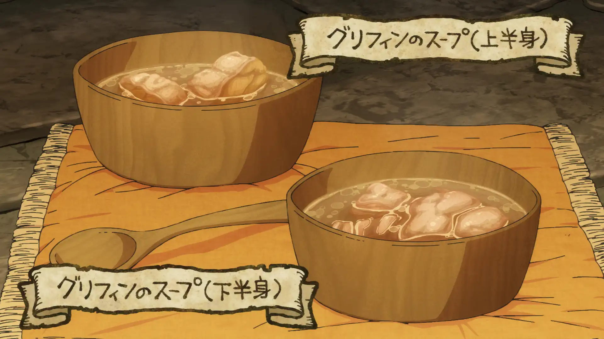

Griffin Soup

A simple soup made by boiling Griffin meat in water. In order to replicate the soup Senshi ate in his past, there is very little seasoning and prep. The griffin meat is tough and has a gamey after-taste, a common characteristic of carnivorous creatures.
Ingredients
- Griffin meat (shoulder or thigh).....1 chunk
- Water.....eyeball the amount
- Salt.....eyeball the amount
Directions
- Boil water in a pot.
- Slice the griffin meat into bite sized chunks.
- Sprinkle salt over the sliced griffin meat and rub it in with your hands.
- Drop the meat into the boiling water and let it cook through. Stir occasionally.
- Enjoy!